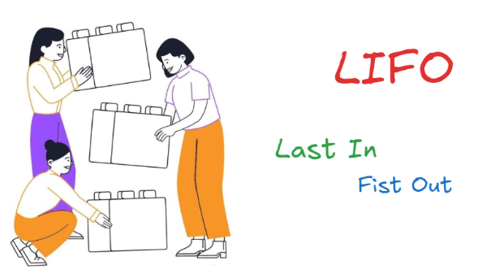

Stack
A stack stores elements in LIFO order — last in, first out. You can only add and remove at one end, called the top.

How a stack works
Think of a pile of plates. You put a new plate on top, and you take the top plate off. The plate at the bottom is the last one you can reach.
10 was pushed first, so it comes out last.
The operations
A stack has five operations. All of them are O(1) because none of them needs to move the other elements.
Click to expand
| Operation | What it does | Complexity |
|---|---|---|
| push(x) | Add x on top | O(1) |
| pop() | Remove the top element | O(1) |
| top() | Read the top element without removing it | O(1) |
| empty() | True if the stack has no elements | O(1) |
| size() | Number of elements | O(1) |
In C++, pop() removes the top element but does not return it. To use the value, read it with top() first, then call pop().
Calling top() or pop() on an empty stack is undefined behavior. Always check empty() first.
Filling a stack
The standard library gives you a ready stack in <stack>. Elements come out in the reverse order of how they went in.
Click to expand — declaring and filling
Declaring a stack
#include <iostream>
#include <stack>
using namespace std;
int main() {
stack<int> s; // stack of ints
stack<string> names; // stack of strings
}Filling it one by one
stack<int> s;
s.push(10);
s.push(20);
s.push(30);
cout << s.top(); // 30 — the last one pushed
cout << s.size(); // 3Filling it from an array
int arr[5] = {1, 2, 3, 4, 5};
stack<int> s;
for (int i = 0; i < 5; i++) {
s.push(arr[i]);
}
cout << s.top(); // 5 — the last element of the arrayDisplaying a stack
A stack has no loop over its elements: you can only see the top. To print everything you have to pop, which empties the stack.
Click to expand — the destructive way and the safe way
Popping everything
This prints the elements from top to bottom, and leaves the stack empty.
void display(stack<int> s) { // note: a COPY, not a reference
while (!s.empty()) {
cout << s.top() << " "; // read the top
s.pop(); // then remove it
}
cout << endl;
}
int main() {
stack<int> s;
s.push(10); s.push(20); s.push(30);
display(s); // 30 20 10
cout << s.size(); // 3 — the original is untouched
}Taking the parameter by value (stack<int> s, not stack<int>& s) makes a copy, so the function can empty the copy while the caller keeps its stack. This is the simplest way to write a display function.
Keeping the elements
If you cannot copy, move the elements into a second stack and put them back.
void display(stack<int>& s) {
stack<int> temp;
// empty s into temp, printing on the way
while (!s.empty()) {
cout << s.top() << " ";
temp.push(s.top());
s.pop();
}
// put everything back
while (!temp.empty()) {
s.push(temp.top());
temp.pop();
}
}Moving a stack into another stack reverses it. Doing it twice puts the order back to what it was.
Reversing an array with a stack
This is the most common use of a stack. Push every element, then pop them back into the array — LIFO does the reversing for you.
The first element pushed is the last one popped, so the order comes out reversed.
Click to expand — reversing an array, a vector and a string
Reversing an array
#include <iostream>
#include <stack>
using namespace std;
void reverse(int arr[], int n) {
stack<int> s;
// push every element
for (int i = 0; i < n; i++) {
s.push(arr[i]);
}
// pop them back in reverse order
for (int i = 0; i < n; i++) {
arr[i] = s.top();
s.pop();
}
}
int main() {
int arr[5] = {1, 2, 3, 4, 5};
reverse(arr, 5);
for (int i = 0; i < 5; i++)
cout << arr[i] << " "; // 5 4 3 2 1
}Reversing a vector
void reverse(vector<int>& v) {
stack<int> s;
for (int x : v) s.push(x);
for (int i = 0; i < v.size(); i++) {
v[i] = s.top();
s.pop();
}
}Reversing a string
string reverse(string str) {
stack<char> s;
for (char ch : str) s.push(ch);
string result = "";
while (!s.empty()) {
result += s.top();
s.pop();
}
return result;
}
// reverse("hello") -> "olleh"Time O(n), space O(n) for the stack. Swapping two indices from both ends does the same job in O(1) space, so the stack version is mostly useful when you cannot reach the elements by index — for example a linked list, or a stream of values.
Building your own stack
Two ways to implement one: on top of an array, or on top of a linked list.
Click to expand — array version and linked list version
With an array
An index called topIndex marks the top. It starts at -1 for an empty stack.
class Stack {
private:
int data[100];
int topIndex;
public:
Stack() : topIndex(-1) {}
bool empty() { return topIndex == -1; }
void push(int x) {
if (topIndex == 99) return; // full
data[++topIndex] = x;
}
void pop() {
if (empty()) return;
topIndex--; // the value stays, but is unreachable
}
int top() {
return data[topIndex];
}
int size() { return topIndex + 1; }
};Simple and fast, but the capacity is fixed at 100.
With a linked list
The head of the list is the top of the stack. There is no size limit.
struct Node {
int data;
Node* next;
Node(int x) : data(x), next(nullptr) {}
};
class Stack {
private:
Node* head;
int count;
public:
Stack() : head(nullptr), count(0) {}
bool empty() { return head == nullptr; }
void push(int x) {
Node* newNode = new Node(x);
newNode->next = head; // point at the old top
head = newNode; // the new node is the top
count++;
}
void pop() {
if (empty()) return;
Node* temp = head;
head = head->next;
delete temp;
count--;
}
int top() { return head->data; }
int size() { return count; }
};| Array | Linked list | |
|---|---|---|
| Size limit | fixed | none |
| Memory per element | value only | value + pointer |
| push / pop | O(1) | O(1) |
Where stacks are used
Any time you need to remember what came before, and handle the most recent item first.
Click to expand
| Use | How the stack helps |
|---|---|
| Function calls | Each call is pushed, and popped when it returns |
| Undo in an editor | The last action is the first one undone |
| Back button | The last page visited is the first one returned to |
| Matching brackets | Push an opening bracket, pop when the closing one arrives |
| Depth-first search | Holds the nodes still to visit |
| Reversing | LIFO order reverses the input |
Bracket matching is a short example worth reading:
bool isBalanced(string str) {
stack<char> s;
for (char ch : str) {
if (ch == '(' || ch == '[' || ch == '{') {
s.push(ch);
}
else {
if (s.empty()) return false; // closing with nothing open
char open = s.top();
s.pop();
if (ch == ')' && open != '(') return false;
if (ch == ']' && open != '[') return false;
if (ch == '}' && open != '{') return false;
}
}
return s.empty(); // everything that opened was closed
}